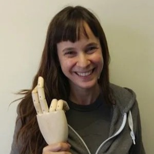
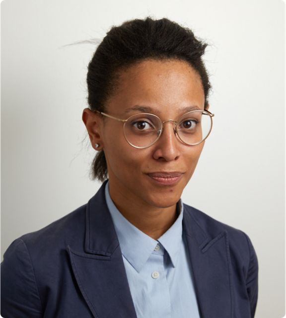
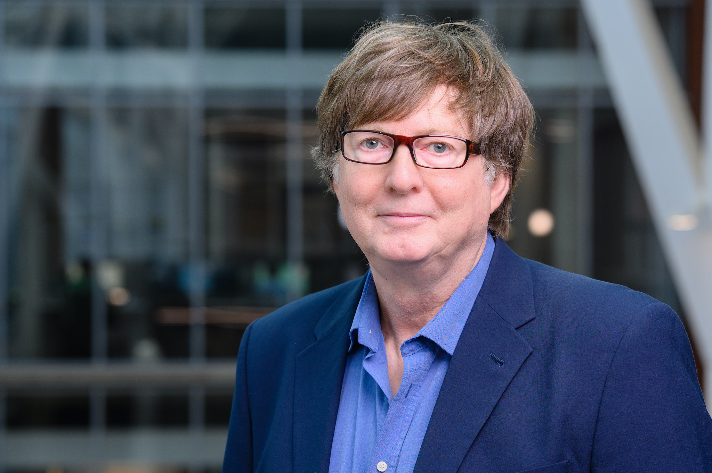
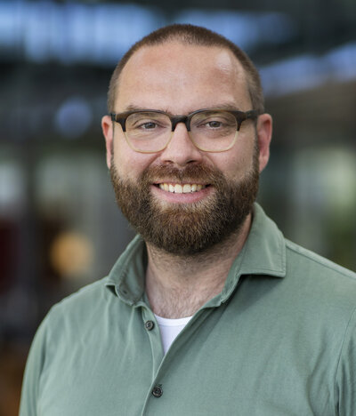
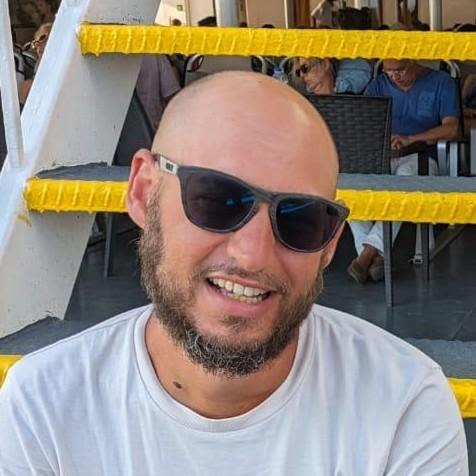
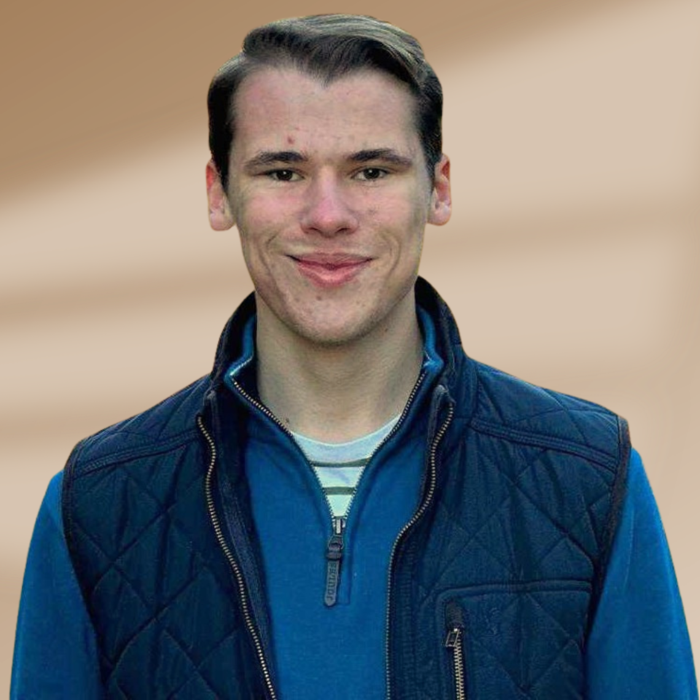
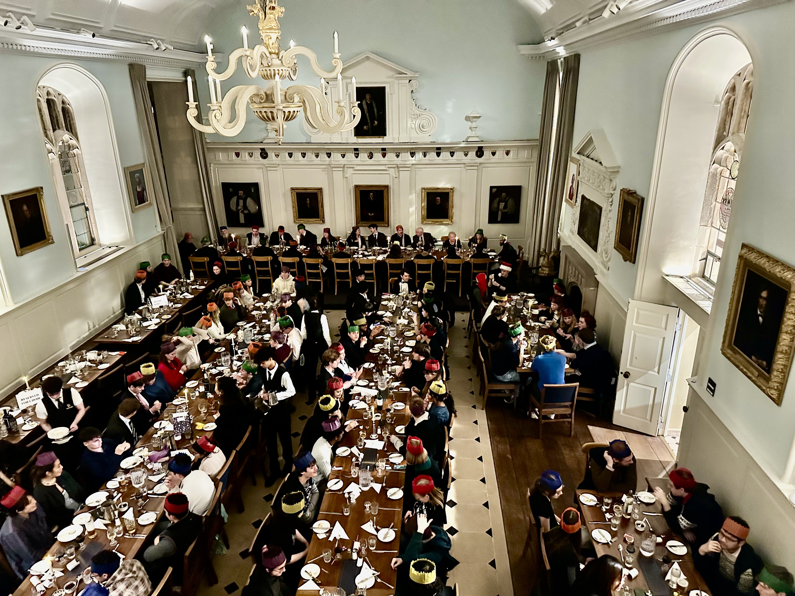
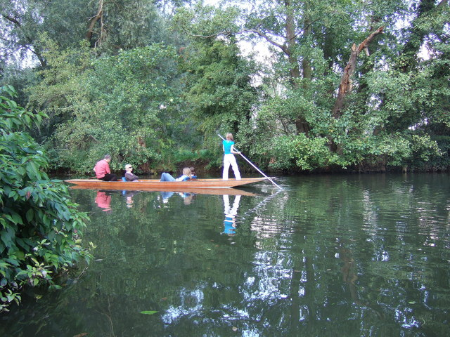

Eight perspectives on the future of cognition & AI
From brain stimulation and prosthetic embodiment to animal-computer interaction and multi-omics modelling — our keynotes traverse the full breadth of cognitive AI research.
Prof. Roi Cohen Kadosh
Beyond Explanation: Engineering Cognition through AI and Neurostimulation
Cognitive neuroscientist and Head of the School of Psychology at Surrey. Pioneer of AI-driven personalisation of cognitive interventions including non-invasive brain stimulation. 200+ publications spanning learning, attention, and lifespan cognitive performance.
Read full abstract
Prof. Tamar Makin
Homo Cyberneticus: Neurocognitive embodiment of artificial limbs
Professor of Cognitive Neuroscience and head of the Plasticity Lab. Investigates how brain plasticity can be harnessed to enhance motor function, supported by the ERC, Wellcome Trust, and UK research councils.
Read full abstract
Dr. Ilyena Hirskyj-Douglas
Opportunities and pitfalls in animal-computing for cognitive science
Assistant Professor leading the Animal-Computer Interaction Group and ERC Starter Grant holder (FUTUREFAUNA). Builds technology that gives animals choice and agency over their own lives — featured in the New York Times and a Netflix documentary.
Read full abstract
Dr. Letizia Gionfrida
Human-in-the-Loop Optimization for HRI
Assistant Professor leading the Vision in Human Robotics Lab. Royal Academy of Engineering Research Fellow and Philip Leverhulme Prize recipient, working at the intersection of bio-inspired robotics and human-centred AI.
Read full abstract
Prof. Tony Prescott
Title to be confirmed
Professor of Cognitive Robotics, internationally recognised for work bridging biological and artificial intelligence and for leading research on biomimetic robotics and embodied cognition.
Read full abstract
Dr. Max Birk
Title to be confirmed
Associate Professor of Human-Technology Interaction and ERC Starting Grant recipient (GAMECHAR). Combines psychology, interaction design, and game design to study motivation and behaviour change.
Read full abstract
Dr. Georgios Baskozos
Multi-omics integration and statistical modelling to better understand chronic pain and neuropathy
Bioinformatician and Associate Professor in the Nuffield Department of Clinical Neurosciences. Develops omics-data pipelines focused on the molecular mechanisms of neuropathic pain.
Read full abstract
Lewis Hotchkiss
Title to be confirmed
Researcher at Swansea University working at the interface of computational modelling and cognitive science. Full bio to be announced.
Read full abstract
Oxford beyond the lecture hall
The conference includes plenty of opportunities to socialise and network across the two days. Two dedicated social events are organised alongside the main programme.

Formal Conference Dinner
Thursday 25 June · 20:00 – 21:30 · Venue to be announced
Join fellow attendees for a formal dinner with wine following the first day's programme. Places are strictly limited to 120 and allocated on a first-come, first-served basis — book early to avoid disappointment.
Contact: Dr Pao-Sheng (Paul) Chang · pao-sheng.chang@ndcn.ox.ac.uk

Punting on the Cherwell
Saturday 27 June · Morning · River Cherwell, Oxford
Round off the conference weekend with a relaxed punting session on the River Cherwell — one of Oxford's most iconic experiences. Glide past the Botanic Garden and Christ Church Meadow in good company.
Further details and sign-up information will be shared closer to the date.
Contact: Dr Pao-Sheng (Paul) Chang · pao-sheng.chang@ndcn.ox.ac.uk